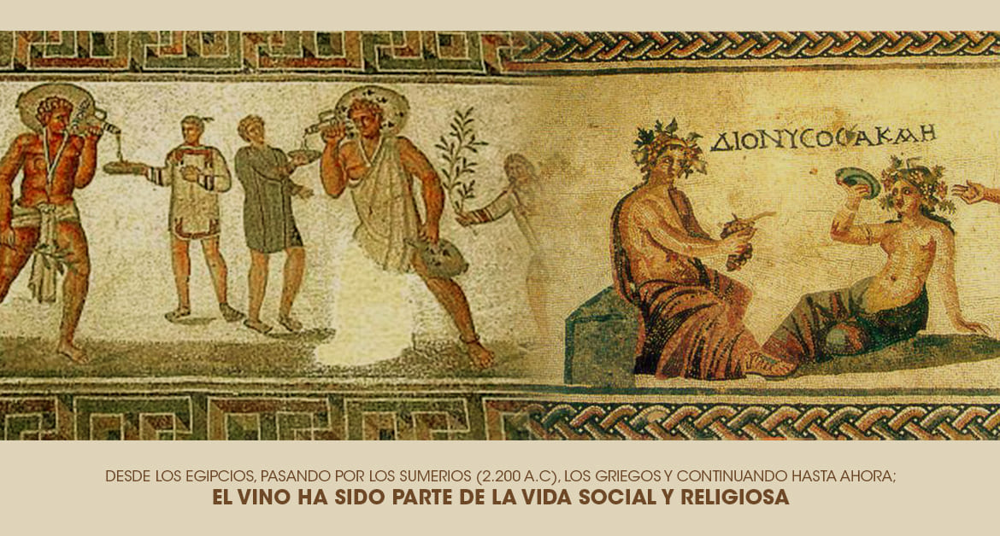

El vino se produjo por primera vez durante el Neolítico, según los testimonios arqueológicos hallados en los montes Zagros, en la región que hoy ocupan Irak e Irán, gracias a la presencia de Vitis vinifera sylvestris y la aparición de la cerámica durante este periodo. La evidencia más antigua de la producción y consumo de vino es una vasija del año 5400 a. C., hallada en el poblado neolítico de Hajji Firuz Tepe, en los montes Zagros. La vasija contiene un residuo rojizo, presumiblemente vino. Aunque recientemente se ha encontrado la bodega más antigua conocida, datada en el año 8000 a. C., se sitúa en Georgia la producción más antigua de vino. Posteriormente, el consumo de vino se extendió hacia el occidente, llegando a Anatolia y Grecia; y hacia el sur, llegando hasta Egipto, ya célebre en Bahariya durante el Imperio Medio (siglo XX a. C.). La más antigua documentación griega sobre el cuidado de la vid, la cosecha y el prensado de las uvas, es Los trabajos y los días, de Hesíodo, del siglo viii a. C. En la antigua Grecia el vino se bebía mezclado con agua y se conservaba en pellejos de cabra.
Historia del Vino

IR ARRIBA